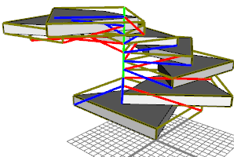
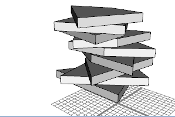

|
|
r operation
Synopsis
r(xAngle, yAngle, zAngle)
r(centerSelector, xAngle, yAngle, zAngle)
Parameters
- xAngle (float), yAngle (float), zAngle (float)
Angles in degrees to rotate about each axis. - centerSelector (selstr)
The rotation center: scopeOrigin or scopeCenter.
Note: scopeOrigin is the default (used if no centerSelector is given).
 The r operation rotates the scope of the current shape around the pivot-axes in xyz order. The center of rotation is either the scopeOrigin (scope.t) of the current shape or the scopeCenter of the current shape.
The r operation rotates the scope of the current shape around the pivot-axes in xyz order. The center of rotation is either the scopeOrigin (scope.t) of the current shape or the scopeCenter of the current shape.
Related
Examples
Rotation Centers
 |
height = 18
dy = 2
Lot-->
extrude(height)
split(y) {
dy : r(0, 360*split.index/split.total, 0)
X
}*
In this example, a mass model is split in vertical direction and the slices are rotated
around the scope.t. Each slice's scope is shown, note how the y-axes denote an axis of symmetry. |
 |
height = 18
dy = 2
Lot-->
extrude(height)
split(y) {
dy : r(scopeCenter,
0, 360*split.index/split.total, 0)
X
}*
The same example as above, but this time the rotations are around the scope center. |
Copyright ©2008-2015 Esri R&D Center Zurich. All rights reserved.